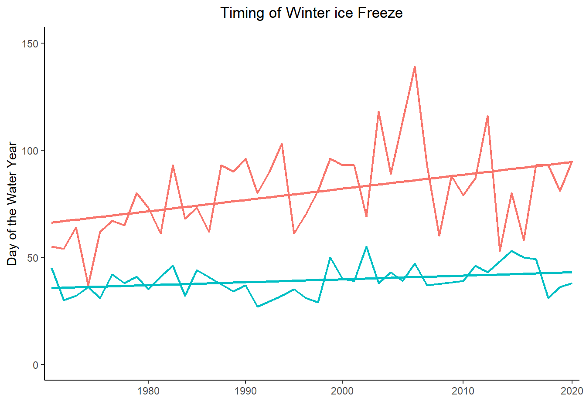
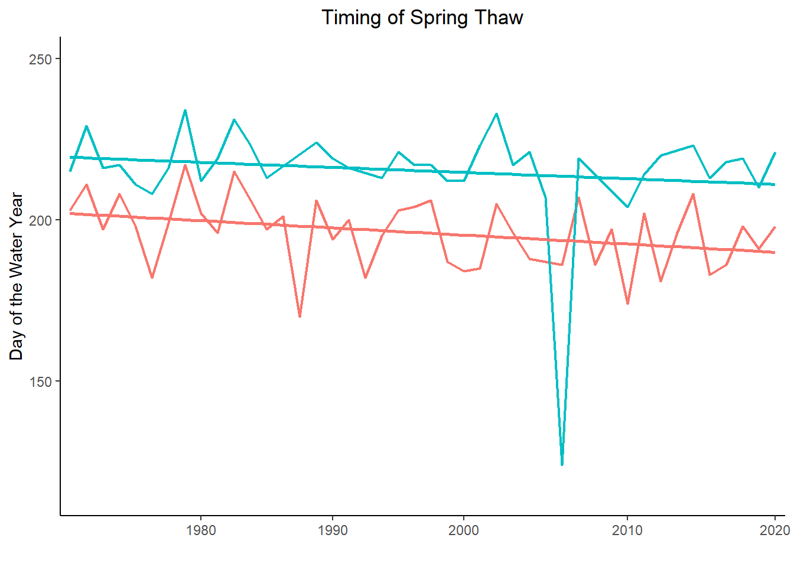
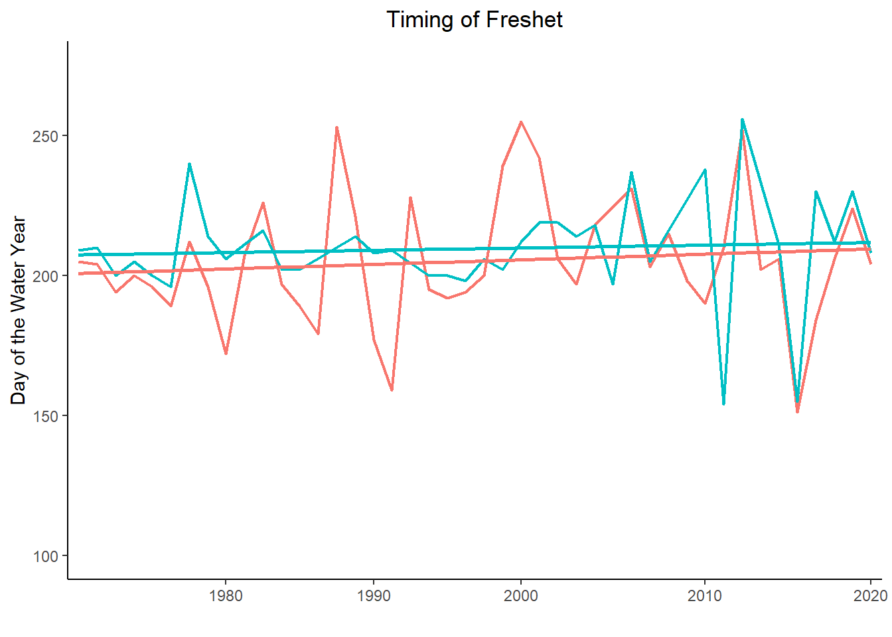
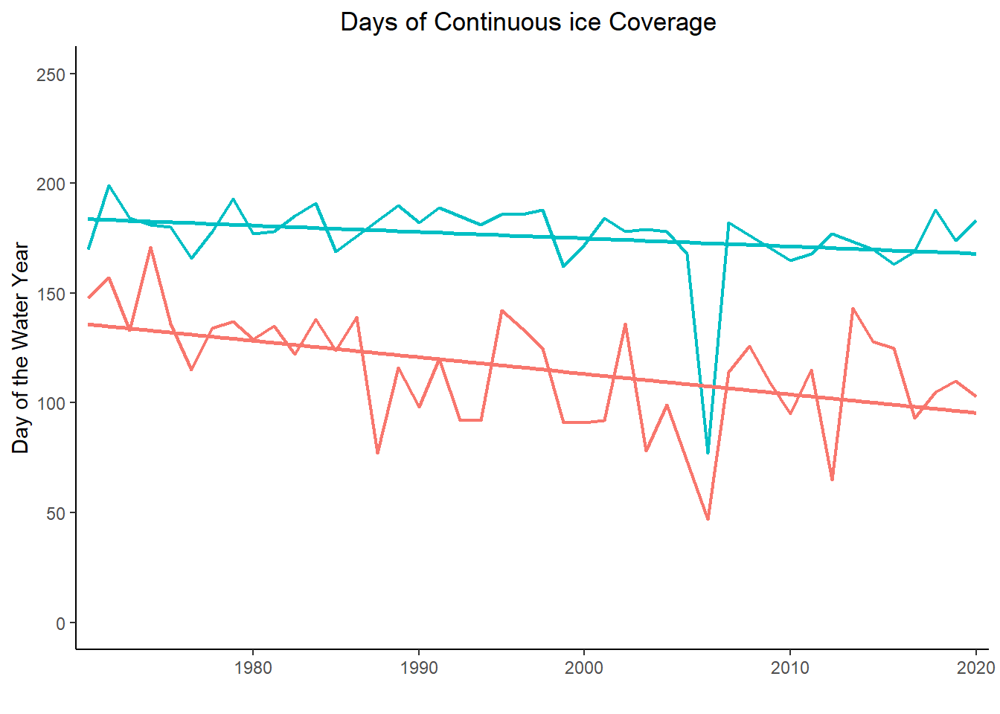

#extract stations from the Water Survey of Canada database
stn_all <- tidyhydat::hy_daily_flows(station_number = c('07BE001','07DA001', '07HA001','07NB001', '07KC001', '07AD002','07DA001', '07AA002'))
stn_all <- stn_all %>%
group_by(STATION_NUMBER) %>%
#make a complete set of days for each year
tidyr::complete(Date = seq.Date(as.Date("1920/10/1"), as.Date("2022/09/30"), by="day"))
#add water year
stn_all <- addWaterYear(stn_all) %>%
mutate(waterYear = as.character(waterYear))
#add day of the year from "Eflows_FUNCTIONS.R" function
stn_all_split <- split(stn_all, stn_all$STATION_NUMBER )
stn_all_split_doy <- lapply(stn_all_split, calc_day_of_wyear)
stn_all <- bind_rows(stn_all_split_doy, .id = "STATION_NUMBER")
#rm(stn_all_split, stn_all_split_doy)
#View(stn_all_split)Analysis of ice Cycle Variables for Northern Rivers in Canada: Peace, Athabasca, and Slave
Analysis of ice Cycle Variables for Northern Rivers in Canada: Peace, Athabasca, and Slave
by Jacqui Levy
Scientists can now analyze a river’s ice cycle using both historical and current data from the Water Survey of Canada database. Newly developed functions are available and applicable at scale on any river in Canada with seasonal ice coverage, and are demonstrated here. These functions grant scientists and watershed managers the tools to conduct reproducible research at scale, and enable data-driven water use decisions.
The following is an analysis of river ice regimes within the Peace-Athabasca Delta (PAD), using these newly developed functions.
Note: These functions are undergoing unit-testing and being developed into an open-source R package for public use.
What is an ice cycle and why is it important?
River ice is a major component of the hydrological cycle for northern rivers like the Peace, Slave, and Athabasca Rivers. These rivers experience thick ice coverage every winter, and a predictable seasonal spring-break up season called freshet. This ice-break up is linked to key ecological processes, such as overland flooding. This flooding replenishes nearby wetlands with water and sustains rich habitat for a biodiverse ecosystem.
Climate change is causing broad spatial and temporal shifts in river ice regimes across Canada, causing harmful downstream impacts to ecosystems and wildlife. Understanding how river ice cycles are shifting is key to building adaptive watershed management plans in a changing environment.
What statistical analysis was used and why?
I analyzed trends in the Peace-Athabasca watershed for the following variables over the past 60 years:
The timing of the onset of freshet
The timing of freeze-up and break-up dates
The length of continuous ice coverage each year
To understand changes in these variables, a Mann-Kendall statistical test was used. A Mann-Kendall test is a non-parametric test that detects a monotonic trend (upwards or downwards) in the data.
Analyzing hydrological data (and other time-series data) is challenging as the daily or monthly observations are not independent of one another. They experience serial autocorrelation: a river’s flow today will be pretty similar to its flow tomorrow, and these observations do not meet the Mann-Kendall test’s assumption of independence.
However, yearly variables like annual ice coverage can be assumed to be independent of one another. For example, the day a river froze this year does not depend on which day it froze last year. Yearly variables such as these are frequently used in a Mann-Kendall trend analysis.
Packages and Functions:
A set of functions were developed to calculate these ice variables: https://github.com/Jacqui-123/EFlows-Project/blob/main/Eflows_FUNCTIONS.R
Open-source hydrological data from the Water Survey of Canada: https://www.canada.ca/en/environment-climate-change/services/water-overview/quantity/monitoring/survey.html
Open-sourced R packages: tidyverse, tidyhydat, zoo, lubridate, ggplot, MannKendall, dataRetrieval
Source code for this project with complete tidying workflow: https://github.com/Jacqui-123/EFlows-Project/blob/main/6_PAS_Rivers.Rmd
Data Processing Methods:
The following is a technical roadmap of how to use these new functions to calculate ice cycle variables for multiple stations and years. This method is scalable and works for multiple stations.
1) First, retrieve water flow data from the Water Survey of Canada, and add a column for “water year” and a column for “day of the water year”.
A “water year” or hydrological year, is measured from October 1-September 30th, and measures the cycle of a watershed from its lowest baseflow point.
A “day of the year” or Julian day, is a continuous count of days from the beginning of the water year. These methods are used in hydrology to standardize the reporting of water statistics and forecasting.
2) Tidy data: detect and resolve anomalies and deal with missing data.
Use the functions built for this project to delete years with more than 14 consecutive days of missing data, and the tidyverse package to estimate missing observations using the last existing observation.
stn_cln <- stn_all %>%
mutate(Date = as.Date(Date)) %>%
filter(waterYear > 1970 & waterYear < 2021)
#delete years that have >14 days missing data using calc_rle function from functions I built for this project
lst_stns_cln <- split(stn_cln, stn_cln$STATION_NUMBER )
lst_stns_cln_rle <- lapply(lst_stns_cln, calc_rle)
#unlist the station numbers
stns_ready <- bind_rows(lst_stns_cln_rle, .id = "STATION_NUMBER")
#reformat date and fill remaining missing values with preceding values
stns_daymonthyear <- stns_ready %>%
mutate(Date = format(Date,"%d-%m-%Y")) %>%
group_by(STATION_NUMBER) %>%
fill(Value, .direction = 'downup')3) Calculate the ice cycle variables using the ice functions
These functions calculate the timing of the onset of freshet, the freeze and thaw dates, and the days of total continuous ice coverage. Use the split-apply-combine method to loop over a list of data frames and calculate all variables for multiple stations.
See source code for how to combine the output dataframes, especially if there are an uneven number of years for each station.
#first make a list of dfs- split by station number
lst_stns <- split(stns_yearmonthday, stns_yearmonthday$STATION_NUMBER )
#apply ice variable function to all dfs in the list, by station
stn_g1 <- lapply(lst_stns, Group_1_ice_cover)
stn_g2 <- lapply(lst_stns, Group_2_freeze_thaw)
stn_g3 <- lapply(lst_stns, Group_3_freshet)
#Unnlist the outputs
output1 <- bind_rows(stn_g1, .id = "STATION_NUMBER")
output2 <- bind_rows(stn_g2, .id = "STATION_NUMBER")
output3 <- bind_rows(stn_g3, .id = "STATION_NUMBER")
test <- stn_all %>%
filter(STATION_NUMBER == "07AA002")4) Mann-Kendall Trend Analysis: Use the MK function created for this project
Tests were performed at an alpha = .05, a conservative level to ensure a low probability of a type I error.
Results table for select stations:
| STATION_NUMBER | Freshet_Onset | Interpretation | ice_cover | Interpretation.1 | Freeze_doy | Interpretation.2 | Thaw_doy | Interpretation.3 | |
|---|---|---|---|---|---|---|---|---|---|
| 3 | 07BE001 | 0.299 | Not Significant | 0.025 | Signficant | 0.212 | Not Significant | 0.017 | Signficant |
| 4 | 07DA001 | 0.615 | Not Significant | 0.203 | Not Significant | 0.375 | Not Significant | 0.240 | Not Significant |
| 5 | 07HA001 | 0.320 | Not Significant | 0.003 | Signficant | 0.017 | Signficant | 0.009 | Signficant |
| 6 | 07KC001 | 0.166 | Not Significant | 0.021 | Signficant | 0.055 | Not Significant | 0.508 | Not Significant |
Interpretation
Most stations had non-significant values for these ice variables, and the Mann-Kendall test did not detect a monotonic trend in ice coverage for most variables.
This does not mean that there have been no changes in ice regimes, but only that this test did not detect an effect at the selected level. More precise analysis of across the full watershed are needed, and will be forthcoming.
It is notable from the results table that the test detected a trend for two stations (07HA001 & 07KC001) along the Peace River, across several of the ice variables.
The ice cycle variables for these two stations are graphed below using the lm smooth method to fit a linear trend to the data.




From the graphs above, it appears that the Peace River is freezing later in the year, and thawing earlier, with less total days of continual ice coverage. This indicates a shift to a warmer and drier regime. Other studies have found similar results, but a more thorough investigation would be needed to draw any conclusions from the data here.
It would also be useful to conduct a Mann-Kendall test on the freeze, thaw, and freshet flows measurements to see if these regime shifts might be caused by lower flows, or if there are other mechanistic pathways.
Conversely, the timing of freshet appears to be later in the year. This could be due to lower or more variable flows, making it difficult for the function’s algorithm to detect the onset of freshet at the precision is was built for. Perhaps a different algorithm is needed for different watersheds, or perhaps we are seeing unprecedented changes in watershed ice regimes.
Conclusion
This document describes the workflow and methodology for using ice variable functions to assess trends in ice regimes for rivers across Canada.
The Canadian River ice Database Project previously calculated some of these ice cycle variables, however, they were only calculated for approximately 300 water stations, and only through 2015. These newly developed functions allow scientists to calculate present-day data, in addition to historical data, for any of the 1000+ water stations from the Water Survey of Canada.
The next step in this project is to create an accessible, open-source R package, and apply this analysis broadly for approximately 900+ reference stations within Canada. My hope is that scientists and watershed managers will be able to use this tool in conjunction with climatic data and models, to better assess and predict broad-scale watershed changes.
References
Beltaos, S., & Bonsal, B. (2021). Climate change impacts on Peace River ice thickness and implications to ice-jam flooding of Peace-Athabasca Delta, Canada. Cold Regions Science and Technology, 186, 103279. https://doi.org/10.1016/j.coldregions.2021.103279
Beltaos, S. (2018). Frequency of ice-jam flooding of Peace-Athabasca Delta. Canadian Journal of Civil Engineering, 45(1), 71–75. https://doi.org/10.1139/cjce-2017-0434
de Rham, L., Dibike, Y., Beltaos, S., Peters, D., Bonsal, B., & Prowse, T. (2020). A Canadian River ice Database from the National Hydrometric Program Archives. Earth System Science Data, 12(3), 1835–1860. https://doi.org/10.5194/essd-12-1835-2020